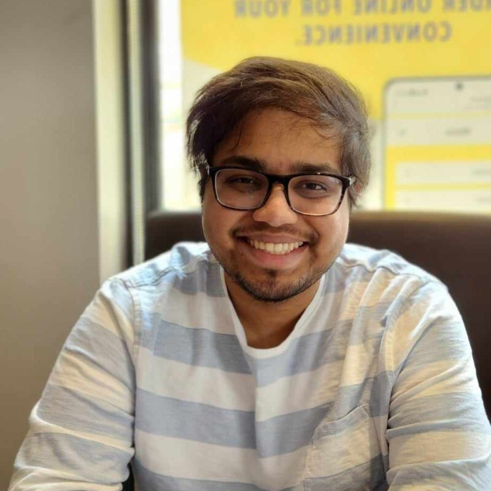

😊 About Me
Hi there! I'm currently a PhD student in chemical engineering and applied chemistry at the University of Toronto. My research revolves around the acceleration of material discovery using deep learning and exploring the multimodality of metal-organic frameworks. Feel free to connect with me on LinkedIn or BlueSky if you are ever interested in talking about chemistry, cheminformatics, material science, engineering or just life!
